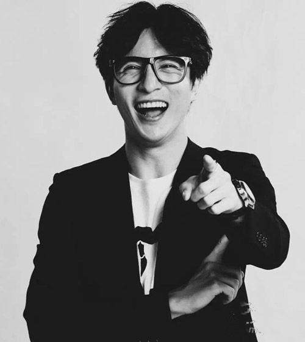

陈鑫吴的个人网站
歌手薛之谦

1983年7月17日出生于上海，中国内地男歌手、主持人、演员。2005年因参加选秀节目《我型我秀》而被大众所熟知。2006年发行首张同名专辑《薛之谦》正式出道，并凭借歌曲《认真的雪》获得极高的关注度。
2012年，主演青春励志片《音乐江湖》。2013年11月，发行专辑《意外》，并凭借该专辑获得第21届东方风云榜十大金曲奖。
2016年，歌曲《一半》获得第23届东方风云榜音乐盛典十大金曲奖；同年9月，携手黄龄献唱电影《我不是潘金莲》的推广曲《来日方长》。

2017年3月，推出新单曲《高尚》。代表作品有《绅士》、《我好像在哪见过你》、《演员》、《丑八怪》等。2018年12月31日，参加江苏卫视2019跨年演唱会
制作人：18电子商务二班陈鑫吴